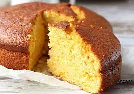
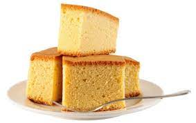

RECETA de Aymara
¿Cómo hacer un bizcochuelo?

Ingredientes:
- 4 huevos
- 1 taza de azúcar
- 2,5 tazas de harina leudante
- 1 taza de leche (240ml)
OPCIONAL
- 1 cucharadita de esencia de vainilla
- Ralladura de limón
Pasos:
- Para empezar a hacer este bizcochuelo de vainilla, bate el azúcar con los huevos hasta que se integren completamente.
- Ahora, para preparar la masa de un bizcochuelo de vainilla esponjoso, tamiza la harina leudante antes de añadirla a la mezcla.
- Agrega la mitad de la harina leudante y bate de forma envolvente. A continuación, agrega la leche y cuando ya se haya integrado, añade el resto de la harina.
- Continúa batiendo unos minutos más y vacía la mezcla del bizcochuelo casero en un molde especial para horno. Con esta mezcla puedes usar un molde de 20 cm.
- Hornea el bizcochuelo en el horno a 180 ºC por 45 minutos o hasta que esté doradito. Ten en cuenta que la temperatura dependerá de la potencia del horno, así como del tipo de horno. Por ello, te recomendamos que vayas revisando cada cierto tiempo cómo va tu bizcochuelo de vainilla para que no se pase ni quede crudo. Puedes hacerlo insertando un cuchillo en el medio del bizcocho, si sale seco, ¡tu postre estará listo!
¡Deja reposar unos minutos y cuando haya tomado temperatura ambiente, desmoldar el bizcochuelo de vainilla esponjoso!
TIPS:
Si no tienes para hacer un bizcochuelo con harina leudante, no te preocupes. Puedes usar harina normal y añadir una cucharadita de polvo de hornear o levadura química.
Precalienta el horno antes de meter el bizcocho, así te aseguras de que se hornee de manera uniforme.

Para más contenido te invito a mirar mi video.